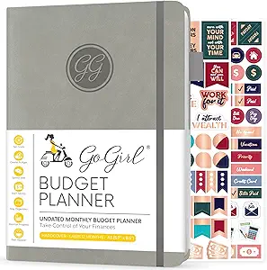

Budget vs Expense Tracking: The Complete Guide to Controlling Your Money (2026)
📘 In This Guide 👇
- Introduction to Budget and Expense Tracking
- What Is Budgeting? (Your Financial Blueprint)
- What Is Expense Tracking? (Your Financial Reality Check)
- Budget vs Expense Tracking: The Key Differences
- The Real Power: Why You Need Both
- Expense Tracking: A Mirror of Reality
- How Budgeting and Expense Tracking Work Together
- Practical Example in Action
- Common Mistakes to Avoid
- Tools You Can Use
- Which Should You Start With?
- The Evolution of Financial Control
- Real-Life Benefits of Using Both
- A Simple System You Can Start Today
- Frequently Asked Questions
- Final Thoughts
Introduction to Budget and Expense Tracking
Managing money wisely isn’t just about earning more, it’s about understanding how your money flows. Two essential tools that shape financial success are budgeting and expense tracking. While they are often confused or used interchangeably, they serve very different purposes. Think of them as two halves of a powerful system: one plans your financial future, and the other reveals your financial reality.
When used together, they create clarity, control, and confidence. When misunderstood, they lead to confusion, overspending, and missed opportunities.
In this comprehensive guide, you’ll learn the true difference between budgeting and expense tracking, why both matter, and how to combine them for long-term financial success.
If you're looking for a full budgeting systems, read our complete beginner budgeting guide for managing money effectively
Author Note: This guide is grounded in real-world budgeting practices used by individuals managing tight incomes, including freelancers and families working toward long-term financial stability.
Quick Answer: Budgeting is planning how you will spend money, while expense tracking records how you actually spend it. You need both to fully control your finances.
Budgeting helps you plan, while expense tracking shows real spending.
🔑 Key Takeaways
- Budgeting plans your money, while expense tracking reveals your actual spending, both are essential for full financial control.
- A budget without tracking is unreliable, and tracking without a budget lacks direction, success comes from combining both.
- Expense tracking builds awareness, helping you identify wasteful habits and hidden spending leaks.
- Budgeting creates discipline and structure, ensuring your income is used intentionally toward goals.
- Consistency matters more than perfection, regular tracking and reviewing your budget leads to long-term financial success.
This guide is based on proven budgeting systems used by financial counselors, nonprofit credit agencies, and long-term savers around the world.
At SmartMoneyTrek, we focus on practical personal finance systems designed for real people, especially those building stability from limited income.
What Is Budgeting? (Your Financial Blueprint)
A budget is a structured plan for how you intend to spend and save your money over a specific period, typically monthly. It is forward-looking, meaning it focuses on directing your money with intention before it is spent.
Core Features of Budgeting
- Proactive: You assign every dollar a role in advance
- Goal-driven: Spending reflects your priorities and financial objectives
- Structured: Income is organized into clear categories such as housing, food, savings, and lifestyle
Example of a Monthly Budget
- Rent: $1,500
- Food: $800
- Transport: $300
- Savings: $500
- Miscellaneous: $400
Total: $3,500
This approach ensures every dollar is assigned a purpose, reducing waste and limiting impulsive spending.
Why Budgeting Matters
Budgeting gives you control over your finances by helping you:
- Avoid overspending
- Prioritize essential expenses
- Spend intentionally and efficiently
- Plan for future financial commitments and goals
At its core, budgeting answers one key question: 👉 “Where do I want my money to go?”

- ✔ Monthly budgeting & expense tracking pages
- ✔ Built-in goal setting and savings tracking
- ✔ Perfect for beginners and low-income budgeting
To build a strong foundation, learn how to create a monthly budget step-by-step that actually works in real life.
What Is Expense Tracking? (Your Financial Reality Check)
Expense tracking is the systematic process of recording and monitoring your actual spending. Unlike budgeting, it is backward-looking (or real-time), focusing on what has already occurred rather than what you planned.
Core Features of Expense Tracking
- Reactive: Captures real transactions as they happen
- Data-driven: Based on actual figures, not assumptions
- Detailed: Accounts for every expense, including small, frequent purchases
Example of Expense Tracking
In one week, your spending might look like:
- Groceries: $500
- Transport: $200
- Eating out: $350
- Airtime: $100
This level of detail reveals your true financial behavior, not just your intentions.
Why Expense Tracking Matters
Expense tracking gives you clarity and control by helping you:
- Identify spending patterns
- Detect unnecessary or excessive expenses
- Stay accountable to your financial plan
- Make informed, data-backed decisions
At its core, expense tracking answers a critical question: 👉 “Where did my money actually go?”
If you're struggling with overspending, see our practical ways to save money on a low income to immediately reduce financial pressure.
If you don’t yet have a simple tracking system, follow our complete beginner budgeting guide to see where your money is leaking and how to plug those holes.
Budgeting helps you plan, while expense tracking shows real spending.
Budget vs Expense Tracking: The Key Differences
| Feature | Budgeting | Expense Tracking |
|---|---|---|
| Purpose | Planning | Monitoring |
| Time Focus | Future | Past/Present |
| Nature | Predictive | Actual |
| Role | Sets limits | Measures behavior |
| Frequency | Periodic (monthly) | Continuous (daily) |
| Outcome | Direction | Awareness |
Simple Analogy
Think of your finances as a journey:
- Budgeting is your map and travel plan, it defines your route and destination.
- Expense tracking is your dashboard, it shows your fuel level and spending in real time.
Without a plan, you risk moving without direction. Without tracking, you lose visibility and may drift off course.
The Real Power: Why You Need Both
Relying on just one tool creates blind spots. True financial control comes from combining both budgeting and expense tracking.
Budgeting Without Tracking = Wishful Thinking
A well-crafted plan means little without execution. Without tracking:
- Overspending goes unnoticed
- Progress cannot be measured
- The budget becomes an unrealistic wish list
Tracking Without Budgeting = No Direction
Recording expenses alone lacks strategy. Without a budget:
- There are no limits guiding your spending
- Problems are only identified after the fact
- It turns into a financial post-mortem rather than prevention
The Winning Formula
When used together:
- Budgeting sets direction
- Tracking measures performance
- Adjustments drive improvement
This creates a continuous feedback loop, turning awareness into action and gradually strengthening your financial discipline over time.
Expense Tracking: A Mirror of Reality
People often underestimate how much they spend—especially on small, frequent purchases that quietly add up.
Expense tracking provides clarity by:
- Revealing hidden spending patterns
- Exposing “money leaks” that drain your finances
- Closing the gap between intention and actual behavior
It creates financial transparency and that honesty is the foundation for meaningful, lasting change.
If you’re starting from zero, read our step-by-step emergency fund guide to build financial security faster.
How Budgeting and Expense Tracking Work Together
Real financial control comes from consistently combining both systems.
Step 1: Create Your Budget
Before the month begins, establish a clear plan for your money:
- Identify your total income
- Allocate funds across essential spending categories
Apply proven frameworks to structure your budget effectively:
- 50/30/20 Rule: Divide income into needs, wants, and savings
- Zero-Based Budgeting: Assign every dollar a defined purpose
This step sets a strong financial foundation, ensuring your spending is intentional, organized, and aligned with your priorities rather than driven by impulse.
Step 2: Track Every Expense
As you spend:
- Record transactions in real time
- Use tools like apps, spreadsheets, or a simple notebook
- Capture every expense no matter how small
Consistency matters more than perfection. Reliable tracking builds accurate financial awareness.
Step 3: Review and Adjust Weekly
Regularly compare your actual spending against your budget:
- If you overspend, cut back in other categories
- If you underspend, redirect the surplus strategically
This is where insight becomes action, turning raw data into smarter financial decisions.
For those who prefer more precision and control, zero-based budgeting assigns every dollar a specific purpose.
Practical Example in Action
Assume your monthly food budget is $800
Week 1 Spending:
- Groceries: $250
- Eating out: $150
Total: $400; already 50% of your budget in just one week
What This Reveals
- Spending is front-loaded, putting pressure on the remaining weeks
- Dining out is consuming a disproportionate share
- Immediate adjustments are necessary to stay within budget
This illustrates the real advantage of combining budgeting with expense tracking: you don’t just plan; you gain timely insight to correct course before small issues become financial setbacks.
High monthly bills often lead to debt. If that’s your situation, visit our how to reduce debt and stop high interest payments eating your income.
Common Mistakes to Avoid
Even with the best intentions, these common pitfalls can weaken your financial strategy:
1. Treating Budgeting as a One-Time Task
A budget is not fixed, it should evolve alongside your income, expenses, and priorities. Fix: Review and adjust it monthly to keep it relevant and effective.
2. Ignoring Small Expenses
Minor, frequent purchases often go unnoticed but accumulate significantly over time. Fix: Track every expense, even $50 transactions to maintain full financial visibility.
3. Creating Unrealistic Budgets
Overly strict or idealistic plans are difficult to sustain and often lead to frustration. Fix: Design a budget that is practical, flexible, and aligned with your real lifestyle.
4. Tracking Without Reviewing
Collecting data without analyzing it limits its value. Fix: Regularly evaluate your spending patterns to uncover insights and guide better decisions.
5. Overcomplicating the System
Excessive categories or tools can make the process overwhelming and unsustainable. Fix: Keep your system simple, clear, and easy to maintain for long-term consistency.
If your income is tight, learn realistic ways to increase your income so you can improve your savings rate.
Tools You Can Use
Getting started doesn’t require complex systems, simplicity and consistency matter more than sophistication.
Budgeting Tools
If you prefer a simple manual system, a structured planner like this can help you stay consistent:
- Spreadsheets: Excel or Google Sheets for structured planning and flexibility
- Budgeting Apps: Automated tools that simplify allocation and tracking
- Simple Notebooks: A practical option for manual planning and control
Expense Tracking Tools
- Mobile Finance Apps: Real-time tracking with automated categorization
- Bank SMS Alerts: Instant visibility into transactions as they occur
- Manual Logs: Recording expenses yourself for greater awareness and discipline
Ultimately, the most effective tool is not the most advanced, it’s the one you can use consistently.

- ✔ Simple daily expense tracking system
- ✔ 12-month structured financial layout
- ✔ Clean and minimal design for easy use
Which Should You Start With?
If you’re just beginning your financial journey, start with expense tracking.
Why Start Here?
- Builds awareness: You gain a clear view of where your money actually goes
- Reveals real habits: Your spending patterns become visible and measurable
- Improves accuracy: It provides a solid foundation for creating a realistic budget
After tracking your expenses consistently for 2–4 weeks, you’ll have reliable data to design a budget that reflects your true financial behavior not assumptions.
The Evolution of Financial Control
Consistently using both budgeting and expense tracking drives a clear progression in your financial life:
- Awareness: You gain full visibility into where your money goes
- Control: Your spending begins to align with your financial plan
- Stability: Unexpected expenses become manageable, not disruptive
- Growth: You build confidence to save and invest strategically
Over time, this progression shifts your finances from reactive and uncertain to structured, resilient, and growth-oriented.
Research published by the Consumer Financial Protection Bureau (CFPB) highlights how many households struggle to track everyday spending, which is why simple budgeting systems that create clear spending limits can improve money management habits.
Real-Life Benefits of Using Both
When budgeting and expense tracking work together, they create a powerful system for financial improvement:
1. Increased Savings
You allocate funds intentionally and follow through with discipline, making saving consistent rather than occasional.
2. Reduced Financial Stress
Clear visibility into your finances removes uncertainty, replacing anxiety with confidence and control.
3. Better Decision-Making
With accurate data and a defined plan, you evaluate spending choices more strategically and avoid impulsive decisions.
4. Faster Goal Achievement
Whether building a business or investing, your progress becomes measurable, structured, and easier to sustain.
Together, these benefits turn financial management into a proactive, results-driven process.
This is where most people fail: they either plan without tracking or track without planning. Financial success happens only when both systems work together consistently.
A Simple System You Can Start Today
If you want a practical and effective approach, follow this simple cycle:
Step 1: Track All Expenses (2–4 Weeks)
Start by building awareness. Record every expense to understand your actual spending patterns.
Step 2: Create a Realistic Budget
Use the data you’ve gathered to design a budget that reflects your real financial behavior, not assumptions.
Step 3: Review Weekly
Consistently compare your spending against your budget and make necessary adjustments.
Repeat this process every month. Over time, it creates a continuous improvement loop that strengthens your financial discipline and decision-making.
Learn More on SmartMoneyTrek
Explore our core financial guides:
- Save Money – proven ways to cut bills and build savings
- Budgeting – Tools and strategies to control your money
- Make Money – real side hustles and income ideas
- Loans & Debt – How to borrow wisely and eliminate debt
Frequently Asked Questions (FAQs)

- ✔ Easy-to-use budgeting layout
- ✔ Expense tracking + goal planning
- ✔ Portable and beginner-friendly
Final Thoughts: Mastering the Balance
Budgeting and expense tracking are not opposing concepts, they are complementary tools that work best together.
- Budgeting gives your money purpose by defining how it should be allocated
- Expense tracking provides accountability by showing how it is actually used
One establishes the plan; the other validates the outcome.
Relying on only one leaves gaps in your financial system. But when combined, they shift your approach from guesswork to clarity, from reactive habits to deliberate control, and from merely getting by to building long-term stability.
Ultimately, financial success is not determined by how much you earn, but by how effectively you manage it.
Start today: plan with intention, track with discipline, and consistently refine your approach, this is how lasting financial transformation begins.
Take Control of Your Money Starting Today
Stop guessing where your money goes. Learn the exact step-by-step system to plan, track, and control your finances.
Start Your Budget NowYour financial journey doesn’t need to begin with perfection. It simply needs to begin with consistency, because consistent action, over time, is what turns small steps into lasting progress.
This content is for educational purposes only and does not constitute financial advice.
As an Amazon Associate, we may earn from qualifying purchases at no extra cost to you.